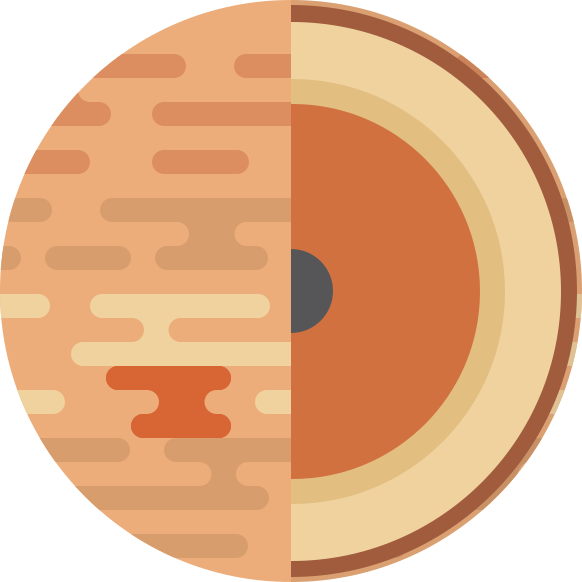
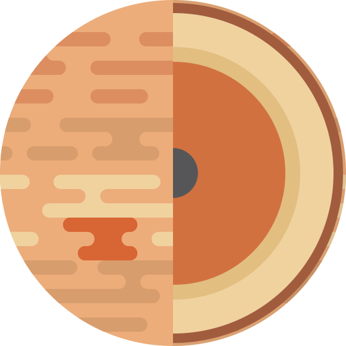

jupiter
Jupiter is the fifth planet from the Sun and the largest in the Solar System. It is a gas giant with a mass two and a half times that of all the other planets in the Solar System combined, but less than one-thousandth the mass of the Sun.
Source: WikipediaWhen the Juno arrived in 2016, it found that Jupiter has a very diffuse core that mixes into its mantle. A possible cause is an impact from a planet of about ten Earth masses a few million years after Jupiter's formation, which would have disrupted an originally solid Jovian core.
Source: WikipediaThe best known feature of Jupiter is the Great Red Spot, a persistent anticyclonic storm located 22° south of the equator. It is known to have existed since at least 1831, and possibly since 1665.
Source: Wikipedia